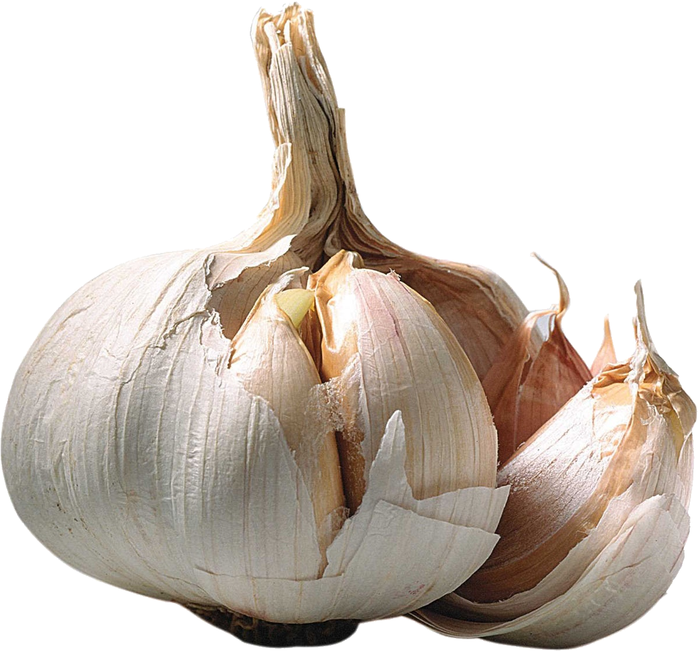
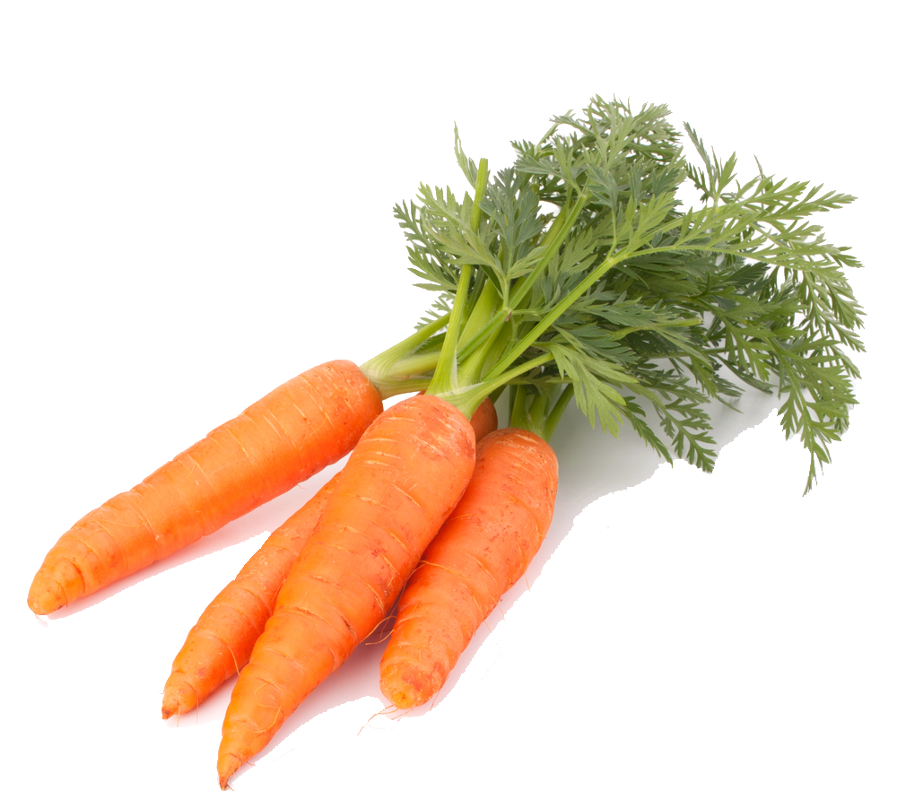
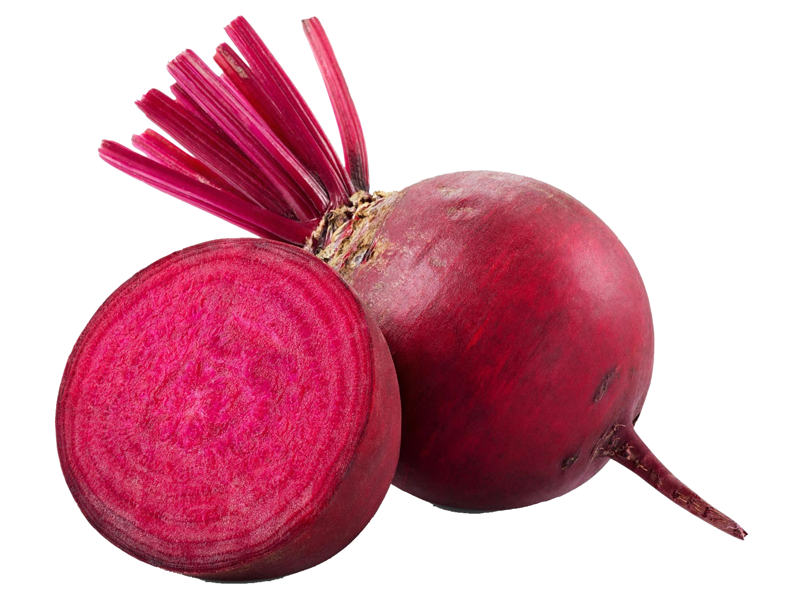
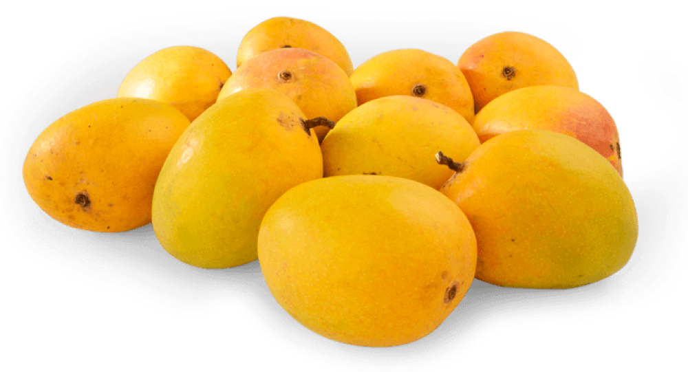
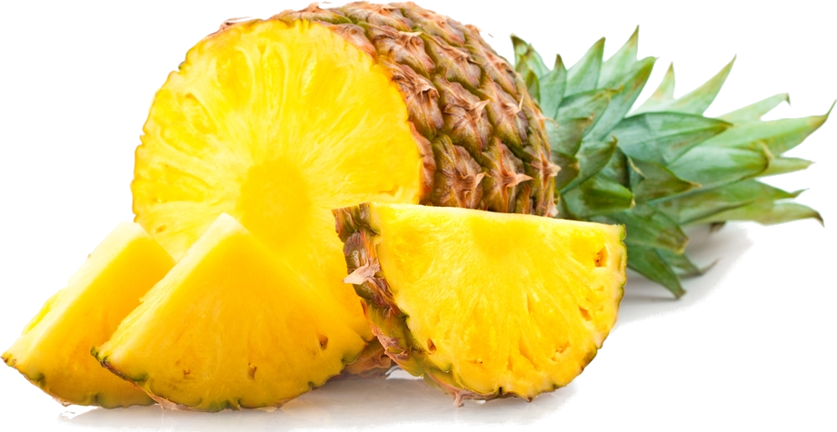
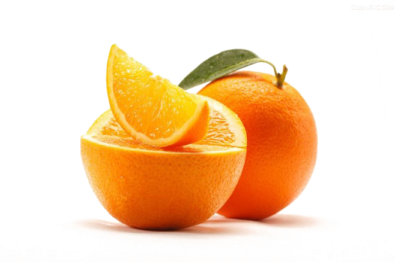
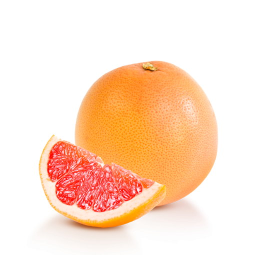

Since 2020, the Cavaliere farms, located in Brazil, are in charge of planting, harvesting, packing and
distribution of premium quality fruits and vegetables.
All stages of fruit and vegetable production are carefully controlled, in accordance with cultivation
regulations and using the latest technology.
Our premium products

Banana
It is very rich in vitamins A and B (especially B3), and minerals such as calcium, chlorine, phosphorus, potassium, sulfur and magnesium.
Onion
Rich in vitamin C and zinc. They have high diuretic power.


Garlick
In addition to its remarkable antioxidant properties, garlic also has cardioprotective, anticancer, anti-inflammatory, immunomodulatory, antidiabetic, antiobesity and antibacterial properties, among others.
Carrot
It is very rich in vitamin A


Beetroot
Composed in great quantity by folic acid, vitamin C and iron.
Papaya
It has high contents of vitamins B1, B2 and B3 (also known as niacin), which regulate the nervous system and also regulate the digestive system. It also contains vitamins A and C.


Melon
Provides good amounts of vitamins A and C, small amounts of B group vitamins, minerals like potassium, calcium, chlorine, magnesium, phosphorus, sodium, and sulfur.

Watermelon
It has beta-carotene, folic acid and vitamins B5 and C, and contains small amounts of others vitamins of group B. It also provides calcium, magnesium, phosphorus, potassium and sodium.
Mango
Rich in vitamins, especially carotene (vitamin A) and vitamin C


Anana
It is a good source of vitamin C, contains several vitamins of group B and some varieties They provide carotene. It also provides calcium, magnesium, phosphorus, potassium, and sodium.
Orange
They are rich in beta-carotene and vitamin C, and have small amounts of vitamins of group B and E. They also contain calcium, magnesium, phosphorus, and potassium


Mandarine
The most abundant mineral in mandarin is potassium, necessary for the generation and transmission of nerve impulses, muscle activity and the water balance of cells. It also provides calcium and magnesium and, to a lesser extent, iron and zinc and phosphorus.
Lemon
Rich in vitamin C and also contains vitamins B1, B2, B3, B5, B6, B8, K and P. In terms of minerals it is rich in calcium, copper, iron, magnesium, phosphorus, sodium, and sulfur.


Grapefruit
In grapefruit juice, the diuretic and draining properties facilitate liver purification, while vitamin C strengthens the immune system. With grapefruit, the most visible benefits appear on the skin and hair, thanks to vitamin A, which also contributes to eye health.
Cabagge
It contains 92% water, a lot of fiber and few calories and carbohydrates. It is rich in vitamins A, C, E and B and in minerals such as sulfur (which provides powerful antioxidant properties), potassium, and calcium. It also contains folic acid and arginine, which helps us fight colds.